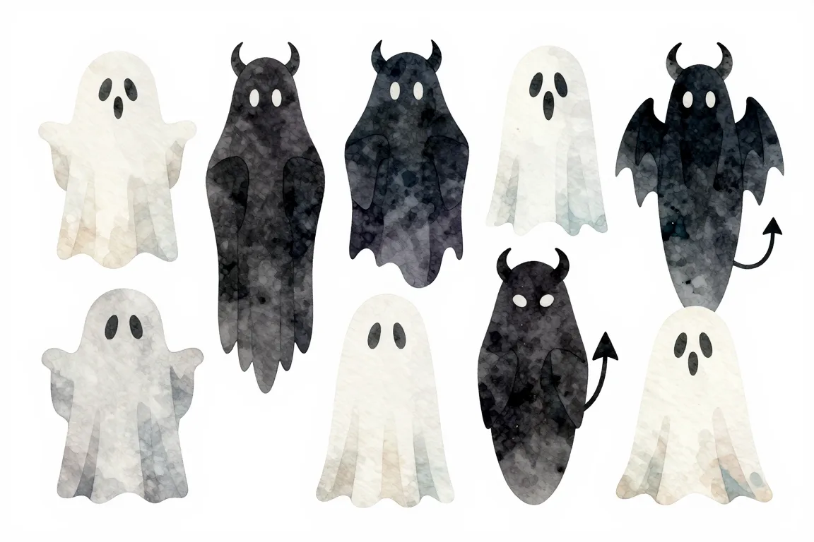

Mýty o programování#
Nemáš na to mozek. Není to pro starý. Nemáš to vystudované. Ale taky: Naučíš se to za tři měsíce a utrhnou ti ruce! Sto tisíc mzda! Všelijakých mýtů o kariéře v IT koluje spousta. Takže jak to je?

Nejčastější mýty#
Některé představy o programování a programátorské profesi nemají moc společného s realitou, ačkoliv je lidé stále opakují. Následující odstavce se snaží věci uvést na pravou míru a zabránit různým falešným obavám nebo naopak nereálným očekáváním. Můžeš si to pustit i jako video.
Musím mít talent na techniku nebo matematiku? Záleží na věku? Potřebuji vysokou školu?
Video je součástí série Průvodce nováčka v IT, kterou natočilo ENGETO ve spolupráci s Honzou z junior.guru.
Už je pozdě začít #
Programování není balet ani hokej, začít se dá opravdu v jakémkoliv věku. Někdo se k programování dostal už v pubertě a pokud je tobě přes třicet, můžeš váhat, jestli má vůbec smysl se o něco pokoušet. Realita je však taková, že těm, kteří začali v patnácti, se už zas tak moc programovat nechce, nebo se na něco specializovali. Jinými slovy, budete soutěžit v jiných ligách a místa je dost pro všechny. Nejspíš se už nestihneš stát programátorskou megahvězdou, byť ani to není zcela vyloučeno, ale normální práci v oboru si v pohodě najdeš.
S programováním jsem začala ve 30, při rodičovské. Hrozně mě to baví, nejradši bych u toho strávila 24h denně. Začít se dá v každém věku.
Že na věku nezáleží dokazují i následující příběhy reálných lidí, kteří dokázali v pozdějším věku změnit kariéru a dnes se programováním živí.


Nemáš na to matematický mozek, chybí ti talent #
Častým omylem je představa, že potřebuješ talent na techniku, nebo konkrétně přímo na matematiku. Kromě vysoce specializovaných pozic programátoři při své každodenní práci nic složitého nepočítají. Věda, která za programováním stojí, tedy informatika, má jistě s matematikou mnoho společného, ale v praxi si většinou vystačíš se základy středoškolských počtů a logickým myšlením. Počítání se při programování využívá podobně jako třeba při truhlařině. Je lepší, když si místo zkoušení od oka umíš věci správně změřit a navrhnout.

Z matematiky jsem míval čtyřky a nikdy mě nebavila. Dodnes si beru kalkulačku i na odečítání.
Co se týče nějakého talentu, žádné speciální předpoklady nepotřebuješ. Programování je spíše řemeslo a více než vrozená genialita ti pomůže píle a trpělivost. Kromě toho, mnohem více než třeba zrovna matematika je potřeba angličtina. Materiály pro úplné začátečníky existují i v češtině, ale potom už se bez schopnosti alespoň číst anglický text obejít nelze. Nedostatečná angličtina je v IT jako bolavý zub. Chvíli vydržíš, ale když to nezačneš včas řešit, budeš pak už jen litovat.

Všetko, čo je pre teba nové, bude zo začiatku frustrujúce, pôjde ti to pomaly. Ale nie preto, že si blbý alebo si sa nenarodila so špeciálnym génom. Je to len otázka času, snahy, námahy, vytrvalosti, trpezlivosti.
IT není pro ženy #
Někoho to možná překvapí, ale k programování není potřeba penis. Neexistuje žádný důvod, proč by žena nemohla být skvělou programátorkou a kdo si to myslí, je ze středověku. Naopak, bez žen bychom neměli počítače, nedostali bychom se na Měsíc a nevyfotili bychom černou díru.
Když jsem přišla k programu Apollo, nebyly tam žádné jiné ženy, které by psaly software.
Podle ČSÚ je v Česku zatím žen v IT stále méně než v Turecku, ale na zlepšení se intenzivně pracuje. Aktivity jako PyLadies nebo Czechitas se snaží programování mezi ženami popularizovat a přichystat jim bezpečné prostředí, v němž si z nich nikdo nebude dělat legraci za to, že položily hloupou otázku, nebo je šovinisticky posílat zpátky k plotně. I kultura IT firem se postupně mění a stává se k ženám příjemnější, a to dokonce i v českém rybníčku, kde se lidé běžně děsí slov jako feminismus nebo diverzita.


IT je pouze pro geniální asociály #
Když se řekne „ajťák“, lidé si představí brýlatého mladíka s ponožkami v sandálech nebo nějakého hackera v kapuci, který sedí ve sklepě, kde pozoruje změť písmenek. Seriály jako britský IT Crowd nebo americká Teorie velkého třesku stále posilují různé stereotypy, ale i kdybychom jim chtěli v něčem dát za pravdu, je dobré si uvědomit, že jejich první díly vznikly před 20 lety. Ačkoliv si toho někteří lidé stále ještě nevšimli, IT už dávno nevypadá jako na známé fotce „brutální pařby informatiků“.
A nejde jen o to, že si ti kluci z fotky dnes přijdou na hezké peníze a pracují v prestižních firmách, ani o to, že už je v oboru mnohem více žen. Technologie možná dříve patřily k obskurním zálibám, dnes už však prostupují život každého z nás. Spolu s tím je IT přístupnější a otevřenější pestré škále osobností. Pro účely rozboření zažitých představ asi postačí módní stylistka April Speight nebo hardwarová kutilka Naomi Wu.
Kromě samotného programování poskytuje IT a na něj napojený internetový průmysl i celou řadu dalších pozic, které ani nemusí být nutně technické: internetový marketing, psaní reklamních textů, design aplikací, psaní technické dokumentace, manažerské pozice, správa počítačové sítě a mnohé další.
Tito všichni většinou společně pracují v týmech, takže schopnost komunikace má na mnohých pracovištích větší hodnotu než zázračná genialita. Pokud to umíte s lidmi, máte zajímavé zkušenosti z jiného oboru a mezi své koníčky řadíte i jiné věci než počítače, je to dnes spíše výhoda než handicap.
Potřebuješ vysokou školu #
Pokud máš možnost studovat informatiku na vysoké škole, jdi do toho! Odradit se nech snad jen pokud ji už studuješ a trpíš při tom. Vysoká škola ti dá především rozhled, stáže, slevy, kontakty, souvislosti a vědomosti do hloubky, možnost jet na Erasmus. Pokud chceš programovat samořídící auta nebo pomáhat raketám do vesmíru, bude to s vysokou školou rozhodně snazší.
To ale většina IT pracovníků nedělá. Běžní zaměstnavatelé po tobě budou chtít vytvářet webové stránky nebo mobilní appky. Ty zhotoví samouk s minimální praxí stejně dobře jako absolvent. K práci v IT tedy univerzitu nutně mít nemusíš. Ještě se občas objeví firma, která z požadavku na VŠ titul nesleví, ale většinou se zaměstnavatelé spokojí s tím, pokud chybějící řádek v životopise vyvážíš dostatečnou praxí na projektech, klidně i v podobě domácích cvičení.
Nie každý z nás bude programovať tie roboty čo behajú po Marse. V minulosti možno programovanie bola veľmi špecializovaná záležitosť, ale dnes má tak široký záber, že každý kto chce, si v tom spektre miestečko nájde.
Firmy hlavne zaujíma, či vieš robiť. Je im viacmenej jedno, kde si sa to naučil. Ak ukážeš niečo skutočné, čo si sám vyrobil, tak koho zaujíma odkiaľ to vieš? Vieš to!
Nemysli si ale, že když nepotřebuješ titul z VŠ, nebudeš se muset učit. IT je obor, v němž se naopak nikdy učit nepřestaneš. Ani profíci s dvacetiletými zkušenostmi se nemohou přestat vzdělávat v novinkách.
Zajímavou variantou je zkusit VŠ studovat, vybírat si zajímavé obory a předměty, ale ve chvíli, kdy už ti to přestane dávat smysl, bez pocitu viny odejít. Také se můžeš učit programovat po vlastní ose a studovat při tom úplně jiný obor, který tě zajímá. Svou budoucí kariéru můžeš pak založit na tom, že budeš rozumět např. sociologii nebo školství a dokážeš je propojit s moderními technologiemi.


Firmy se o tebe porvou #
Ve firmách existuje velká poptávka po zkušených programátorech, takže se často mohou náboráři přetrhnout, aby je získali do svého týmu. Na základě toho se pak ale šíří mýtus, že si stačí přečíst čtyři kapitoly o nějakém programovacím jazyku a hned dostaneš spoustu nabídek práce. To je velký omyl a přinesl by ti velké zklamání. Junior (tak se v náborářské hantýrce označují začátečnické pozice) si ve skutečnosti musí svou první příležitost pracně shánět.
Firmy většinou neumí juniory efektivně zaučovat a raději měsíce hledají zkušenější lidi, byť beznadějně. Ve skutečnosti ti může rekvalifikace do IT zabrat i dva roky učení a praktických cvičení. Nenech se tím odradit, akorát si nastav ta správná očekávání. Získat práci v IT jako začátečník není jednoduché, ale rozhodně to jde, a to i bez titulu.
Programování je zlatý důl #
Mzdová ohodnocení IT odborníků se už roky umisťují na špici všech tabulek, takže finanční ohodnocení může být pro mnohé velkou motivací pro rekvalifikaci. Tím spíše dnes, kdy lidé kvůli pandemii přicházejí o práci v jiných oborech, ale IT se drží. Programátoři mají co se týče výdělku rozhodně nadstandardní možnosti, ale musíš si uvědomit, že bude chvíli trvat, než se tím odborníkem staneš.
Junior je pro firmu náklad, a to především v podobě času ostatních zaměstnanců. Nemůžeš očekávat, že ti hned začne chodit na účet 50 tisíc, nebo dokonce víc. Začátečníci v oboru se ovšem shodují, že když už je někam vzali, byli schopni na vysoké mzdy dosáhnout již poměrně záhy, v řádu jednotek odpracovaných let.
Sedíš si v teple na židli #
Pro ty, jejichž zaměstnání je fyzicky vyčerpávající nebo se odehrává venku, může kancelářská práce, jakou je i programování, působit lákavě. Člověk u něj přece celý den sedí na židli a v teple, že? Skutečnost je ovšem složitější. Na programátory neprší a nejsou vyčerpaní fyzicky, ale po celém dni intenzivního přemýšlení a komunikace s kolegy se dostavuje velká únava psychická.
Nezřídka dorazíš po práci domů, a byť máš dostatek síly tělesné, z tvého mozku je „zelenina“. Zbytek večera už zvládneš nanejvýš zírat na seriály. Rozhýbání svalů funguje naopak jako způsob relaxace. Ne náhodou se spolu se vzestupem kancelářské práce zaplnily cyklostezky ve městech běžci, a to především v hodinách po konci pracovní doby. Kromě toho brzy zjistíš, že sezení u počítače není úplně nejzdravější způsob trávení dní a musíš vědomě kompenzovat újmu, kterou způsobuje, ať už cvičením nebo kvalitní židlí.
Je to samá pohoda #
Jak už naznačuje předchozí odstavec, programátorská profese má i své nevýhody. Světe div se, je to práce jako každá jiná. Tvoje každodenní spokojenost bude nakonec záviset na konkrétní firmě, projektu, štěstí, šéfech, týmu kolegů a klidně i na tom, co někdo jiný, koho vůbec neznáš, špatně naprogramoval před pěti lety a ty s tím teď musíš pracovat. Budeš bojovat s psychickou zátěží, můžeš zpochybňovat svůj zápal pro věc a časem i vyhořet.
Programování není něco, co bych milovala. Ne, že bych jej nenáviděla, akorát to prostě nemiluju.
IT ale naštěstí umožňuje mnoho způsobů, jak se uplatnit i jinak, než jen sezením u počítače a na schůzích. Můžeš se časem přesunout k učení a mentorování, psaní technických textů, pořádání komunitních akcí, začít přednášet na konferencích, konzultovat, vést lidi… Možností, jak si programování namíchat něčím jiným nebo jak zcela změnit hlavní zaměření své práce, je v rámci IT nepřeberně.
Máš otázky? Chceš probrat svou situaci?
Na junior.guru Discordu si pomáhá 242 lidí, které zajímá svět IT juniorů. Začátečníci, kteří hledají komunitu a podporu. Senioři s chutí sdílet své zkušenosti. K tomu pravidelné online akce a mnoho dalšího.